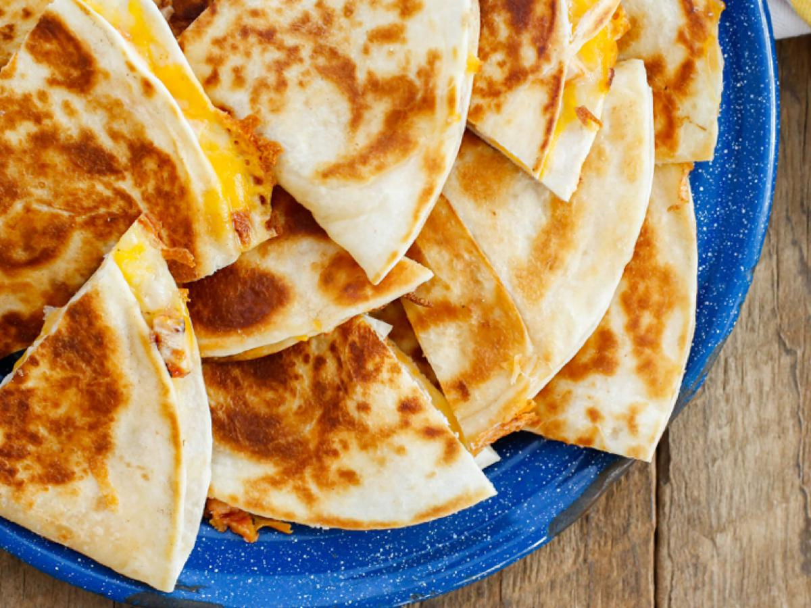

Easy 5 Minute Chicken Quesadilla
Easiest chicken Quesadilla you will ever make!

Ingredients
- Tortilla
- Bag of grilled chicken or rotisserie chicken (de-boned)
- Bag of chedar cheese
- Butter
Instructions
- Simple instructions for ths recipe! Butter the skillet and chop the chicken
- Place skillet over medium heat, melt a small amount of butter in it.
- Place tortilla in the skillet for 1 minute, flip, then add a handful of chicken and cheese, fold!
- Flip tortilla after 1 minute and cook until cheese is melted.
It really is that simple!